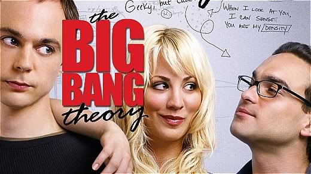

The theme that I chose is based on the TV series "Big Bang Theory." I am a huge fan of the show and this will show you a little about me and my nerdiness. The group has a rivalry with fellow nerds and their leader Wil Wheaton. Wil Wheaton is best known for his role as Wesley Crusher in Star Trek: The Next Generation. The inspiration for the story come from the episode "The Wheaton Recurrence" where the main characters of The Big Bang Theory face off against Wil Wheaton's team in a bowling showdown at the Pasadena Fun Time Bowling Center.
My Spin: NEED TO FILL IN MY NEW TAKE ON THE THEME